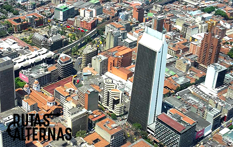

Medellín, Marzo 16 de 2017. 07:30p.m


Medellín ha sido, desde hace mucho tiempo, un lugar marcado por la violencia y el narcotráfico. No obstante, las últimas décadas ha mostrado un notorio esfuerzo por cambiar su imagen y mostrarse como una sociedad creativa y una ciudad innovadora. Rutas Alternas pretende mostrar esta cara positiva de la ciudad, llena de cultura, diversidad grastronómica y entretenimiento. En este espacio queremos llegar tanto a turistas como a los propios ciudadanos que buscan día a día lugares para visitar y divertirse con sus familiares y amigos. Rutas Alternas está hecho por personas apasionadas por los buenos sabores y los buenos momentos y está dedicado a aquellos que les gusta probar cosas nuevas, que les interesa conocer su ciudad y lo que tiene por brindarnos. Nos dirigimos a un público juvenil en busca de nuevas experiencias, aquellos con un paladar listo para nuevos platos pero que, además, buscan diversión en sus noches. Sabemos que en la actualidad, los jóvenes nos cansamos fácilmente de la rutina, los fines de semana se quiere hacer cosas diferentes y sorprender en los grupos de amigos, por esta razón queremos salirnos de lo convencional a través de lugares que tienen mucho por ofrecer. Medellín te puede introducir a un mundo donde estás fuera de tu zona de confort por un fin de semana. Mientras pasas tiempo con tus mejores amigos, podrás olvidarte del trabajo y tener un gran rato en una gran ciudad. No se puede poner un precio a la felicidad y para aquellos que pueden, su dinero recorrerá un largo camino en Medellín. La vida nocturna en esta ciudad promete grandes aventuras en los mejores restaurantes, algunos bares de moda y discotecas interesantes. Nunca se sabe qué esperar en una noche en Medellín, pero prepárate para una noche de diversión.
